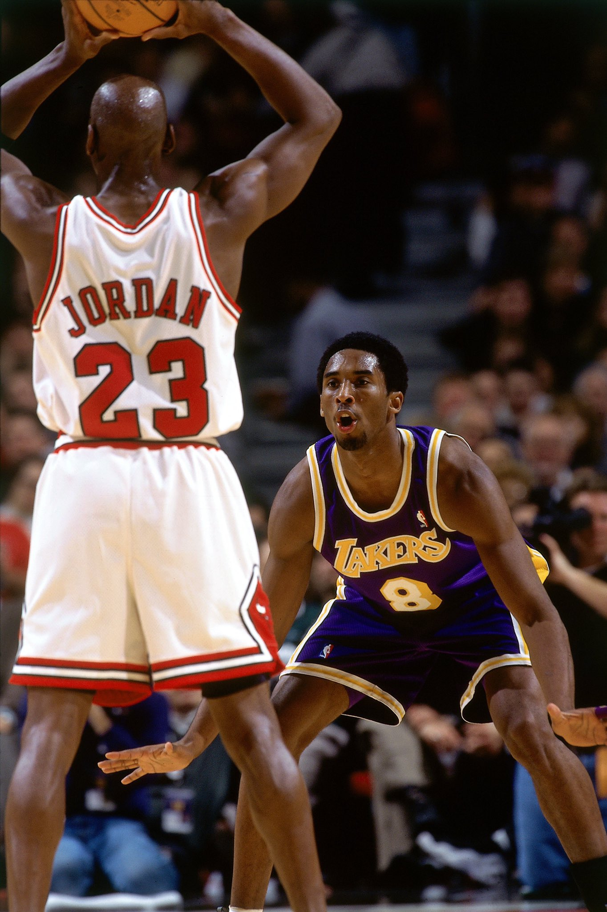

KOBE BRYANT
初生牛犊--小飞侠
在kobe的新秀赛季，他大部分时间都是替补出场，但创造了有史以来最年轻的NBA球员的纪录。 他还参加了灌篮大赛，并在18岁时成为联盟历史上最年轻的灌篮冠军。
由于缺乏上场时间，他在第一个赛季的表现看起来并不那么乐观，第二年他就有了显著的进步。 他的平均得分从每场比赛的7.6分上升到15.4分，并且成为NBA历史上最年轻的NBA全明星赛首发球员。 在赛季中，科比和湖人签下一份为期六年、价值7000万美元的加时合同。这使他一直留在湖人，直到2003-04赛季结束。

当菲尔·杰克逊于1999年接任湖人队的主教练时，科比的命运有所改善。经过多年的稳定改善，科比成为联盟首屈一指的得分后卫之一。杰克逊利用他在芝加哥公牛赢得六座冠军时所实施的三角战术；这个进攻方式帮助科比和奥尼尔晋升为联盟的佼佼者并且成为夺冠热门。连续在2000年、2001年和2002年获得三座冠军，证明了这个观点。
在他的第一个赛季1999/2000。 总决赛对阵印第安纳步行者，湖人在第六战以116比111赢得了自1988年以来的首座冠军。奥尼尔和科比的二人组以及强大的替补阵容，帮助湖人队该赛季赢得67场比赛，并列联盟历史第五多。其中奥尼尔赢得了最有价值球员，科比入选NBA第二最佳阵容和NBA第一最佳防守阵容（年纪最轻球员获得防守荣誉）
2000-01 科比和奥尼尔之间的分歧开始浮出水面，在常规赛湖人只赢56场比赛，比前一年减少11场但是湖人在季后赛中以15胜1负回应他们常规赛的表现创造历史（唯一输的一场是当年艾弗森带领的76人队，艾弗森几乎是以自己的一己之力赢下这场比赛）,在季后赛期间，科比场均得到29.4分，7.3个篮板和6.1次助攻，创造了惊人的数字。 最终又获得了总冠军，他连续第二次当选年度最佳阵容第二队和最佳防守阵容，并且连续第三年入选全明星赛。

2002年，创造湖人历史三连冠。 湖人通往总决赛的道路比前一年艰难许多。当湖人在季后赛的前两轮横扫开拓者并以4比1击败马刺后，湖人对上萨克拉门托国王时没握有主场优势。该系列赛被迫打到第七战，这是湖人自2000年西部决赛以来第一次发生。面对新泽西篮网，科比场均得分为26.8分、命中率51.4％、5.8个篮板和5.3次助攻。23岁的科比成为赢得三座冠军的最年轻球员。（同年他在家乡费城取得31分的成绩后获得了自己的第一个NBA全明星赛最有价值球员）
獠牙展露--黑曼巴
在2007-08赛季。科比再次刷新纪录：2007年12月23日，绰号"黑曼巴"的科比得分超过了20000分职业生涯大关。在29岁122天，最年轻达到20000分的球员.2月，湖人队用中锋夸梅·布朗向曼菲斯灰熊队要来禁区猛将保罗·加索，湖人得到强而有力的内线保罗·加索后，更表示有信心重夺失落的总冠军。常规赛结束后湖人重夺西部第一的位置，在保罗·加索的帮助之下，让科比得到了职业生涯中唯一的NBA最有价值球员奖项。在季后赛中，湖人先后以4:0、4:2、4:1击败丹佛掘金、犹他爵士和圣安东尼奥马刺，这也是科比在作为球队领袖后第一次闯进总决赛。可惜最终球队于2-4的总比分败由保罗·皮尔斯、凯文·加内特和雷·阿伦组成的三巨头波士顿凯尔特人队。
2008-09赛季，湖人队在常规赛取得了西部第一，全联盟第二的战绩，并再度进入总决赛，最后以4-1的战绩击败霍华德带领的奥兰多魔术，而科比·布莱恩特则如愿以偿第一次获得总决赛MVP。
2009-10赛季，湖人队目标挑战二连冠。2010年1月21日，洛杉矶湖人客场对阵克利夫兰骑士队时，科比在第二节靠着一记罚球成为NBA历史上第15位得到25000分的球员。并且以31岁151天取代张伯伦的31岁186天，成为史上最年轻得到25000分的球员。2010年2月1日，科比在客场出战灰熊一役中狂砍了44分，而在第3节还剩4分13秒，科比以一记快攻扣篮，成功超越杰里.威斯特的25192分，成为湖人队史总得分王。而在此赛季时，科比共6度投进关键球，其中更在迈阿密热火队后卫闪电侠韦德的防守下投进绝杀三分（韦德说：要不然他是科比，老子早就冲进去砸了他的更衣室）。最后湖人队在常规赛取得西区第一，连续3次进入总决赛，并以4-3的总比分击败波士顿凯尔特人成功复仇，科比·布莱恩特再次获得总决赛MVP。数据:28.6分、8篮板、3.9次助攻、2.1次抢断、命中率40.5%。（迄今为止最精彩的总决赛之一）

在2010年到2013年，球队的成绩不佳，但是科比打破了许多的NBA记录。除其他外，他成为历史上第五位突破30，000分大关的球员。透过四方交易得到了德怀特·霍华德，科比有挑战个人生涯的第六冠。2013年，4月13日对战金州勇士队，科比上场45分钟，21投9中得到34分。但在比赛还剩下3分06秒时受伤，带伤罚中两球扳平比分后离场，赛后核磁共振检查发现科比的跟腱撕裂，此次受伤让科比无法再达到之前的运动能力，4月13日当天进行了跟腱修复手术，预计要休战6-9个月。在12月8日复出后，他在第六场比赛中再次受伤。左膝横向小腿骨折，直接宣布赛季报销。对湖人来说，这是历史上最糟糕的赛季。
最后的倔强
2015年11月，他宣布将在赛季末结束职业生涯。2016年4月13日，一切都结束了。斯台普斯中心挤满了人，每个人都期待着24号的最后一次亮相。 再次打破记录：当时37岁的他得了60分，也创造了2015/16赛季的得分纪录。比赛结束时，他发表了感人的讲话，感谢在湖人的20年，以及球迷的支持。他在演讲结束时流着泪，说：“Mamba out”